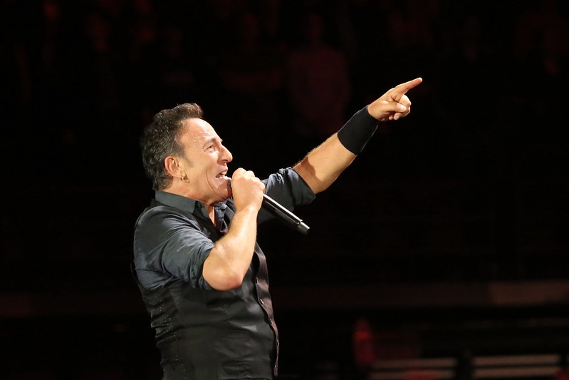

Depression, Anxiety, and Suicide: 11 Male Musicians Speak Out Through Songs
High profile male musicians are speaking out about mental health and writing songs about their experiences with depression, anxiety, and thoughts of suicide
High profile male musicians are speaking out about mental health and writing songs about their experiences with depression, anxiety, and thoughts of suicide
“DEPRESSION DOES NOT EQUAL WEAKNESS. ITS OKAY TO SPEAK UP ABOUT YOUR EXPERIENCES WITHOUT SHAME AND REACH OUT FOR SUPPORT.”
More and more high profile artists in the music industry are speaking openly about their personal experiences with mental health challenges and writing songs that highlight their struggles with depression, anxiety, and/or suicidal thoughts.
Their stories and lyrics resonate with fans and encourage others to speak up about their own experiences without shame – they provide hope and let others know they are not alone.
To help raise awareness of suicide prevention resources, rapper Sir Robert Bryson Hall II (stage name Logic) released a track called “1-800-273-8255” – the phone number for the National Suicide Prevention Lifeline in the United States.
On the day of the track’s release, calls to the lifeline increased by over 25%, with one third of calls specifically referencing the song.
At the 2017 MTV Video Music Awards, Logic performed “1-800-273-8255” with Alessia Cara and Khalid, while suicide attempt survivors and loss survivors huddled around them on stage – demonstrating a level of public support for survivors that had never previously been seen in the industry.
Highlighted lyrics:
I been on the low
I been taking my time
I feel like I’m out of my mind
It feel like my life ain’t mine
…
I want you to be alive, I want you to be alive
You don’t gotta die today, you don’t gotta die
I want you to be alive, I want you to be alive
You don’t gotta die, now let me tell you why– “1-800-273-8255”, Everybody, 2017
Logic | Retired rapper, songwriter, and record producer
“Logic’s ‘1-800-273-8255’ Impact On Suicide Prevention | MTV News Desk Report“
Justin Bieber, one of the world’s best-selling music artists, recently opened up about his experiences with suicidal thoughts and depression in a 2020 documentary titled “Justin Bieber: Next Chapter”. Since the documentary’s release, Bieber has continued to help break down the stigma attached to mental health challenges by speaking more openly about his mental health and through releasing new music about his experiences.
On his recent hit single, ‘Lonely’, Bieber confronts the challenges of growing up in the limelight head-on, revealing the mental health struggles and feelings of isolation he has faced over the past decade.
Highlighted lyrics:
What if you had it all
But nobody to call?
Maybe then you’d know me
‘Cause I’ve had everything
But no one’s listening
And that’s just fuckin’ lonely
I’m so lonely
Lonely– “Lonely”, Single, 2020
Justin Bieber | Singer, songwriter and multi-instrumentalist
“Justin Bieber reveals he experienced suicidal thoughts in new documentary“
Ed Sheeran, a prominent English musician whose songs have gained worldwide recognition, has spoken publicly about his struggles while touring for concerts, describing a dreary pattern of sleeping all day and drinking all night following his performances.
He credits songwriting as an avenue for expressing his troubling thoughts and feelings, and serves as a positive example for fans who may also be struggling with their mental health.
Highlighted lyrics:
Life can get you down so I just numb the way it feels
I drown it with a drink and out of date prescription pills
And all the ones that love me they just left me on the shelf
My farewell
So before I save someone else, I’ve got to save myself
– “Save Myself”, Divide, 2017
Ed Sheeran | Singer, songwriter, musician, record producer, actor, and businessman
“Ed Sheeran Opens Up About Addiction, Panic Attacks and the ‘Lowest Point’ in His Life”
Kendrick Lamar’s Grammy-winning 2015 album, To Pimp A Butterfly, is revered by critics and fans alike for its nuanced exploration of complex political and personal themes, including anxiety, depression, and addiction.
In an interview with MTV, Kendrick referred to his music as “release therapy” – most evident on the track, “u”, in which Lamar, addressing himself, is heard spiralling into a pit of self-loathing and despair as the result of depression and survivor’s guilt, with a chorus that repeats the phrase, “loving you is complicated”.
This song explores the experiences of overwhelming pessimism and negative self-talk that can result from depression, helping fans to see that they are not alone in these otherwise isolating experiences, and offering them an avenue for emotional release.
To Pimp a Butterfly does not leave listeners in this pit of despair, however. “u”’s counterpart “i”, comes toward the end of the album, and is an anthem of self empowerment and resilience in the face of hardship. The pairing of these two songs goes to show listeners that one can find themselves at the lowest of lows and still find happiness on the other side of depression.
Highlighted lyrics:
Are you the reason why mama and them leavin’
No you ain’t shit, you say you love them, I know you don’t mean it
I know you’re irresponsible, selfish, in denial, can’t help it
Your trials and tribulations a burden, everyone felt it”– “U”, To Pimp A Butterfly, 2015
“I’ve been dealing with depression ever since an adolescent
Duckin’ every other blessin’ I can never see the message
I could never take the lead, I could never bob and weave
From a negative and letting them annihilate me
…
And I love myself
(The world is a ghetto with big guns and picket signs)
I love myself
(But it can do what it want whenever it want, I don’t mind)
I love myself
(He said I gotta get up, life is more than suicide)
I love myself
(One day at a time, sun gon’ shine)”
– “i”, To Pimp A Butterfly, 2015
Kendrick Lamar | Rapper, songwriter, and record producer
“Kendrick Lamar Talks About ‘u’, His Depression & Suicidal Thoughts (Pt. 2) | MTV News”
Scott Mescudi, known professionally as Kid Cudi, is a rapper whose lyrical introspection and openness about depression garnered attention and broke boundaries in the genre of hip-hop during the early 2010s – influencing many popular musical artists of today.
Cudi’s transparency about his mental health changed the trajectory of hip hop and popular music, and Cudi continues to maintain that openness with his fans. In 2016, he posted to Facebook that he was checking himself into a treatment program for depression and suicidal thoughts – helping destigmatize depression and suicidal thoughts for his fans and for the hip hop community as a whole.
Highlighted lyrics:
I’ve got some issues that nobody can see
And all of these emotions are pouring out of me
I bring them to the light for you
It’s only right
This is the soundtrack to my life– “Soundtrack to My Life”, Man on The Moon: The End of Day, 2009
Kid Cudi | Rapper, singer, songwriter, record producer, actor, and record executive
“Hi, I’m Scott | Scott Mescudi | TEDxSHHS”
In an interview with Channel 4 news, British rapper Stormzy bravely opened up about his struggle with depression, defying the norms of a music scene largely dominated by macho attitudes. His message hit home for many and encouraged others to speak out.
His albums, “Gang Signs and Prayers” and “Heavy Is The Head” feature raw lyrics that get to the core of his struggle with depression, resonating with many of his young fans, and normalizing discussions about mental health.
Highlighted lyrics:
One more time I’ll make it clear
This some shit I hate to share
Escape this life or pay the fare
Grab this gun and aim it there
Shoot my pain and slay my fear
Before I die, I say my prayer
…
Last year, I cried too many times
Weren’t for Flipz and weren’t for rhymes
Weren’t for Rachel, weren’t for Kelly Man,
Them people saved my life– “Lay Me Bare”, Gang Signs and Prayers, 2017
Highlighted lyrics:
And when you’re down and out
Just hold on, please
Or just close your eyes and count to three
But don’t forget to breathe– From “Don’t Forget to Breathe”, Heavy Is The Head, 2019
Stormzy | English Grime artist and musician
“Stormzy Interview 2017 (extended): Dealing with depression while making his new album”
British singer and songwriter, James Blake, has spoken openly about his struggle with depression and suicidal thoughts, and even penned an essay titled “How Can I Complain?” for a collection of essays about mental health called, It’s Not OK to Feel Blue (And Other Lies).
In the essay, Blake speaks candidly about feeling ashamed of his depression, as though his life was too privileged to experience suffering. His lyrics, though cryptic, often hint at the rejection and alienation he experienced as a youth, and how it has continued to affect him into adulthood. In his song “I Need a Forest Fire”, Blake references wanting to start anew, calling for a forest fire to burn down the figurative walls he has built between himself and others. Many people, like Blake, judge themselves for feeling depressed and feel uncomfortable seeking help. By sharing this experience, Blake encourages others to seek help, even if they feel hesitant.
Highlighted lyrics:
I’m saved by nature
But it always forgets what I need
I hope you’ll stop me before I build a wall around me
We need a forest fire”– “I Need a Forest Fire”, The Colour in Anything, 2016
Jame Blake | English singer, songwriter, multi-instrumentalist and record producer
“James Blake speaks out about struggle with depression”
Country singer, David Nail, initially opened up about his depression to fans back in 2014, but it continued to weigh on him even as his success and fame grew. Nail says that growing up in a Missouri town, talking about mental illness was frowned upon and “would have been entirely viewed as a weakness or, ‘Man, get happy, what do you have to be miserable about?'” responses which are “absolutely the worst thing you can do” to a person struggling with depression.
Things started changing for Nail once he began psychotherapy, which immediately brought him a new sense of peace and inspired him to write about his battle with depression. Nail reflected on therapy, saying, “as you grow more and more comfortable with that process and the person, it’s amazing all the things that you dig up that you never really knew bothered you before, and I just felt this freedom — I felt lighter. I’d held so much of this stuff in and I was, in essence, a ticking time bomb.”
He wrote “Oh, Mother”, to let his mother know she wasn’t responsible for his depression, and he was finally headed in a good direction with therapy and hoped it would take him to a better place.
Highlighted lyrics:
I’m on my way to California
I just need to see the sun
Ain’t so much about the weather
But the demons I just can’t outrunI don’t mean for you to worry
It’s nowhere I ain’t seen before
I just had to say
Ain’t no one else to blame
If I don’t make it out this storm– “Oh, Mother” Oh, Mother EP, 2019
David Nail | American country singer, songwriter, recording artist, and frontman of the band David Nail & The Well Ravens
“David Nail Says He Was A ‘Ticking Time Bomb’ Before Facing His Depression“

American Rock icon, Bruce Springsteen, opened up publicly about his long-term battle against depression in his memoir “Born to Run”. Over the years, he’s learned to manage his illness with antidepressants and psychotherapy, along with support from his wife, but he recorded his album “Wrecking Ball” during some particularly tough years.
Much of his songwriting comes out of his struggle with depression, and his worry that it will become unmanageable like his father’s depression was.
Bruce understands his depression through the metaphor of a car, saying, “I always picture it as a car. All your selves are in it. And a new self can get in, but the old selves can’t ever get out. The important thing is, who’s got their hands on the wheel at any given moment?”. Springsteen’s message is that you may go through tough or dark times as you age and grow, and while you can’t go back and change what’s happened, you can move forward with all you’ve learned.
Highlighted lyrics:
“Baby, I’ve been down, but never this down
I’ve been lost, but never this lostThis is my confession
I need your heart
In this depression
I need your heartBaby I’ve been down, but never this down
I’ve had my faith shaken but never hopeless– “This Depression”, Wrecking Ball, 2012
Bruce Springsteen | Singer, songwriter, and musician, solo artist, and the leader of the E Street Band
“Bruce Springsteen sums up 30-year depression battle with car metaphor”
Ryan Guldemond, frontman of Canadian indie-rock band, Mother Mother, is opening up about his struggles with mental health and writing music with “an increasing quality of vulnerability”.
In an interview with iHeartRadio in 2017, he spoke about writing music while dealing with mental health challenges, saying, “The album [came] out of a turbulent time … so those are true tales regarding the battle with the shadow side of life”. Like many of the musicians highlighted in this article, Guldemond views the writing process as “cathartic”, and remarked that, “I wasn’t really able to look beyond the scope of my own internal situation, so I guess in order to get back to a place of greater conceptual writing, I needed to work through what I was going through”.
Guldemond’s words speak to the all-consuming nature of depression, which can take up a lot of mental energy unless worked through. His use of songwriting and creative self expression to work through his depression offers an example of healthy coping strategies to other men.
Highlighted lyrics
I’m not a monster, I’m a human
And I made a few mistakes
…
You’re not a demon, there’s a reason
You’re behaving that way
It’s alright, it’s okay, it’s alright, it’s okay
And I believe, yes I believe
That you will see a better day
– “It’s Alright”, Dance and Cry, 2018
Ryan Guldemond | Lead vocalist and guitarist of the Canadian Indie Rock band Mother Mother
“On Our Radar: Mother Mother sends an important message to the self-loathing with the powerful ‘It’s Alright’”
“Mother Mother Singer Ryan Guldemond Opens Up About Drugs, Getting Personal”
Fitz and The Tantrums were on tour for their album “All the Feels” when the coronavirus pandemic began shutting down concerts and music festivals. The album captures the uncertainty and turbulence of the times we live in, and addresses issues like stress and depression while promoting the acceptance of mental health struggles.
The song “I Just Wanna Shine” is the pinnacle of their album. Artists Michael Fitzpatrick and Noelle Scaggs cite stigma-busting as a reason for writing the song, saying “it just really gives people the opportunity to talk about things that are really deeply hidden. It’s very, very important to know that you’re not alone in this world”. Both Fitzpatrick and Scaggs have struggled with their mental health, with Fitzpatrick saying they “learned that [they’ve] got to write what’s true and what [they’re] feeling and experiencing if [they] want it to connect with people…it’s like, ‘OK, how can you still talk about anxiety, stress, depression and still make you maybe want to dance while you’re talking about those things?”.
This approach to songwriting is key to making hopeful and joyful music that resonates with their audience – and still gets everyone dancing. At the end of the day, “I Just Wanna Shine” is about acknowledging your struggles, and doing your best to overcome and rise above them.
Highlighted lyrics
I used to lay low, hiding in the shadows
So don’t give me dark days, I already had those
I’m just trying to figure out how to be myself right now
I don’t wanna lay low, hiding in the shadows
So I wake up, I get out of bed
Stay up, stay out of my head
‘Cause it’s dangerous
And I don’t wanna lose my mind, no
I just wanna shine like the sun when it comes up
Run the city from the rooftops
‘Cause today’s gonna be my day
I just wanna climb to the top of a mountain
Standing tall when I’m howlin’
‘Cause today’s gonna be my day
I wake up and I stay up
‘Cause I’m sure good things will happen
If I get out of my way– “I Just Wanna Shine”, All The Feels, 2019
Fitz and The Tantrums | American Indie Pop and Neo Soul Band consisting of Michael Fitzpatrick, Noelle Scaggs James King, Joseph Karnes, Jeremy Ruzumna, and John Wicks
“Michael Fitzpatrick And Noelle Scaggs Of Fitz And The Tantrums On Maintaining Optimism, ‘All The Feels’”
Move for something that matters! Between June 1–15, walk, run, bike, or hike for men's mental health.
Let's Step Up for our dads, brothers, partners, sons, uncles, friends, co-workers — and ourselves.